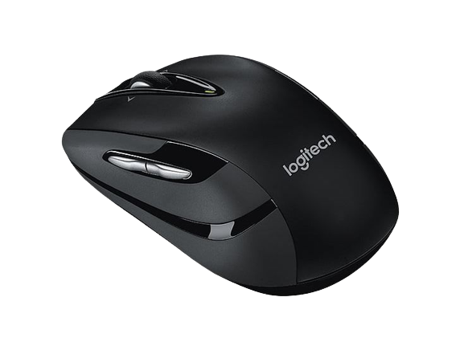
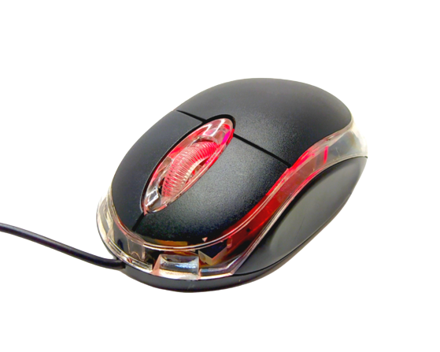

O mouse Razer com fio é um dispositivo de alta precisão projetado para gamers e entusiastas de computadores.
Oferece rastreamento preciso, design ergonômico, iluminação RGB personalizável, botões programáveis e construção durável
Preço promocional em comparação á concorrência.
Uma escolha para quem busca um desempenho premium.
1
Mouse Razer com fio
5
R$ 149,00

Mouse Bluetooth Dell
Descrição do produto:
O mouse Bluetooth da Dell é um dispositivo sem fio que se conecta a computadores e dispositivos móveis via Bluetooth, eliminando fios.
Com um design confortável e ergonômico, é compatível com diversos sistemas operacionais, oferece rastreamento preciso e possui recursos como rolagem fácil e botões personalizáveis
É uma escolha conveniente para quem busca conectividade Bluetooth e qualidade da Dell.
2
Mouse Bluetooth Dell
6
R$ 338,00

Mouse óptico USB preto
Descrição do produto:
O mouse óptico USB preto é um dispositivo de entrada simples e acessível.
Ele se conecta ao computador por USB, possui funcionalidade básica, design simples e é compatível com a maioria dos sistemas.
É ideal para tarefas de navegação e uso geral, adequado para quem não necessita de recursos avançados.